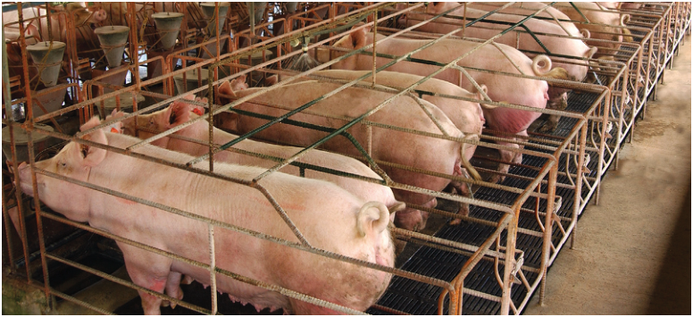
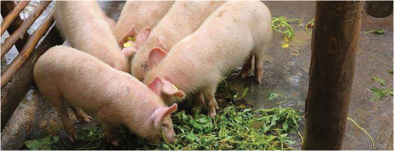

Agriculture for Secondary Schools
(c) Intensive pig farming
In an intensive farming system, pigs are kept in confined, controlled environments
such as barns or houses (Figure 7.4). All aspects of the pigs’ environment,
including feeding, temperature, and health, are closely managed. This system is
highly industrialized and focuses on maximizing production efficiency.
Figure 7.4: An intensive pig farming system. The picture shows the gilts in the breeding unit.
Source: https://www.thepigsite.com/articles/the-importance-of-a-good-gut-feeling-in-pig-production
In some rural and peri-urban areas, a typical small-scale backyard pig farming
is practised. With backyard farming, pigs are kept in small enclosures (Figure
7.5) or tethered in the yard. Farmers often use household food scraps and locally
available feed.
Figure 7.5: Backyard farming system.
Source: https://www.facebook.com/photo/?fbid=a.1640627276215475
112
Student’s Book Form Two